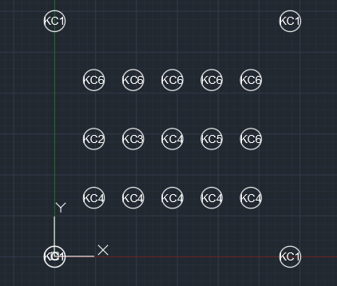
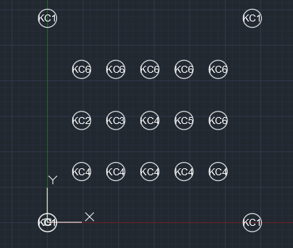

1) RC 코어 + 철골 외곽 시스템
중앙 RC 코어가 강성을 담당하고, 외곽 철골 프레임이 횡하중/비틀림을 분담하는 하이브리드(복합) 구조.
TOP-DOWN 공법은 지하 구조물과 지상 구조물을 동시에 시공하는 공법으로, K-COL 시스템에 최적화된 시공 방법입니다.
K-COL은 TOP-DOWN 공법의 특성에 맞춰 설계되었습니다. Cross H형 단면을 활용하여 X방향과 Y방향 모두에서 동일한 구조 성능을 발휘하며, 볼트 체결을 통한 빠른 시공이 가능합니다.
K-COL은 TOP-DOWN 공법의 장점을 극대화하기 위해 설계되었습니다. 공장 제작, 볼트 체결, 콘크리트 타설 불필요 등의 특징을 통해 공기 단축과 품질 향상을 동시에 달성할 수 있습니다.
K-COL 구조 계산 기능은 Cross H형 단면의 구조 설계를 자동화하여 정확한 구조 계산을 수행합니다.
SRC (Cross H) Design Calculator 인터페이스
운영자 권한이 있는 사용자는 "운영자 Control" 섹션을 통해 전체 계산서 출력, A.F.S. Function, SRC (Cross H), A. D. C. Function 등의 고급 기능을 사용할 수 있습니다.
Auto Find Section 기능은 입력된 하중 조건에 맞는 최적의 Cross H형 단면을 자동으로 찾아줍니다.

Auto Find Section 결과 화면
BOQ(Bill of Quantities) 계산 기능은 프로젝트에 필요한 Cross H형 기둥의 물량을 자동으로 산출합니다.
기둥평면도와 기둥번호를 입력하여 프로젝트의 구조 정보를 관리합니다.
기둥당 면적분배를 자동으로 계산하고 면적분배의 적정성을 검토하여 불필요한 기둥을 삭제 또는 기둥간격을 조정할 수 있도록 합니다.
이기능은 특히 탑다운 기둥 Naming 및 Grouping에 유효한 기능입니다.
 A.D.C Function 이미지
A.D.C Function 이미지EXCEL을 Auto CAD로 보낸 후 추가 기둥을 저장하고 다시 엑셀로 받아들이는 방법
1. Default 엑셀을 csv로 출력합니다.
2. CAD에서 엑셀.csv을 받습니다.
3. 기둥을 추가합니다.
4. 블록을 설정합니다.
5. DATAEXTRACTION
6. default 엑셀와 동일한 양식의 header를 구성한다.
공정 관리 시스템은 제작자와 현장 간 실시간으로 제작 공정을 공유하여 효율적인 프로젝트 관리를 지원합니다.

현장 Mapping 기능은 현장에서 기둥 설치 위치를 시각적으로 관리하고 추적할 수 있는 기능입니다. 설치가 완료된 기둥과 미완료된 기둥의 설치완료율을 확인하고 완료된 기둥을 Web Page상에서 시각적으로 확인할 수 있는 기능을 제공한다.
Cross H형 강재 기둥은 전 세계적으로 다양한 건물 유형에 적용되고 있습니다. Cross H를 이용한 건물은 X방향과 Y방향의 동일한 구조 성능으로 설계가 용이하며, TOP-DOWN 공법 뿐만 아니라 슬래브를 받는 보 및 거더의 기둥접합 특성상 양방향 모멘트를 받는 SRC기둥에 적용이 가능하고 기둥이음은 현장 용접을 사용하지 않고 기둥 플랜지 및 웨브를 현장 볼트 체결 방식으로 공기를 단축할 수 있어 공기단축이 필요한 초고층 건물, 장스팬 오피스 건물, 장경간 내부공간이 필요한 공장기둥, 기하학적 형태를 지닌 복합시설 등 다양한 건축물에 효과적으로 활용되고 있습니다.

러시아 상트페테르부르크에 위치한 유럽에서 가장 높은 건물로, Cross H형 강재 기둥이 적용된 대표적인 초고층 건물 사례입니다.
혹한 환경·연약지반·비틀림 형상을 동시에 고려한 초고층 하이브리드 구조 시스템
중앙 RC 코어가 강성을 담당하고, 외곽 철골 프레임이 횡하중/비틀림을 분담하는 하이브리드(복합) 구조.
5개 페탈(petal)이 회전하며 상승하는 형상으로 비틀림 응답이 커질 수 있어 코어·외곽 프레임 결합으로 제어.
고강도 콘크리트와 혹한 시공(양생/배합)을 통해 강성·내구성·시공성을 확보.
두꺼운 매트 기초와 다수 말뚝을 결합해 연약지반에서 침하/차등침하를 제어.
비거주 첨탑은 자중 최소화와 풍진동 억제가 중심(철골/트러스 + 감쇠 설계).
강풍·진동·혹한 시나리오를 고려해 풍동실험과 해석을 병행하고 사용성 기준을 엄격히 적용.


Cross H형 강재 기둥이 적용된 공장 건물의 실제 사진을 확인하실 수 있습니다. 장경간 내부공간이 필요한 공장기둥에 Cross H형 강재 기둥이 효과적으로 활용되고 있습니다.


가설건축공사는 Cross H형 강재 기둥을 활용한 임시 구조물 및 가설 건축물에 적용되는 공법입니다. 빠른 시공과 효율적인 구조 설계를 통해 공사 기간을 단축하고 안정적인 구조 성능을 제공합니다.

Cross H형 강재 기둥의 구조적 특징을 분석하고, CFT(Concrete Filled Tube) 기둥과 비교하여 각 공법의 특성과 적용 범위를 명확히 파악할 수 있습니다.
Cross H형 단면의 구조설계시 일반 H형강과 동일하고 X방향과 Y방향의 단면 2차모멘트가 증가하므로 장주에 효과적이다. 특히 좌굴길이와 좌굴 안정성은 각 방향이 동일하므로 설계가 용이합니다.
| 📋 항목 | 🏗️ Cross H | 🏢 CFT |
|---|---|---|
| 구조 성능 | ✅ X, Y방향 동일한 성능 | 원형/사각형 단면 |
| 시공 방법 | ✅ 볼트체결(저비용) | ⚠️ 현장용접이음(고비용) |
| 콘크리트 타설 | ✅ 불필요 | ⚠️ 필요 |
| 공기 | ✅ 단축 가능 | ⚠️ 콘크리트 양생 시간 필요 |
| 서비스 홀 시공 | ✅ 무타설로 불필요 | ⚠️ CFT내채움 콘크리트로 필요 |
| 부력방지 | ✅ 선단부 오픈으로 불필요 | ⚠️ 부력방지대책필요 |
| 동절기 공사 | ✅ 우수 | ⚠️ 콘크리트 타설 제약 |
| 품질 관리 | ✅ 공장 제작으로 일정 | ⚠️ 공장제작 및 현장 콘크리트 타설 품질 관리 필요 |
| 제작비용 | ⚠️ 접합부 형태에 따라 고비용 발생 | ⚠️ 접합부 제작-고비용 |
| TOP-DOWN 공법 | ✅ 본설 + 가설기둥 적용 | ⚠️ 제한적(가설기둥 적용 불가) |